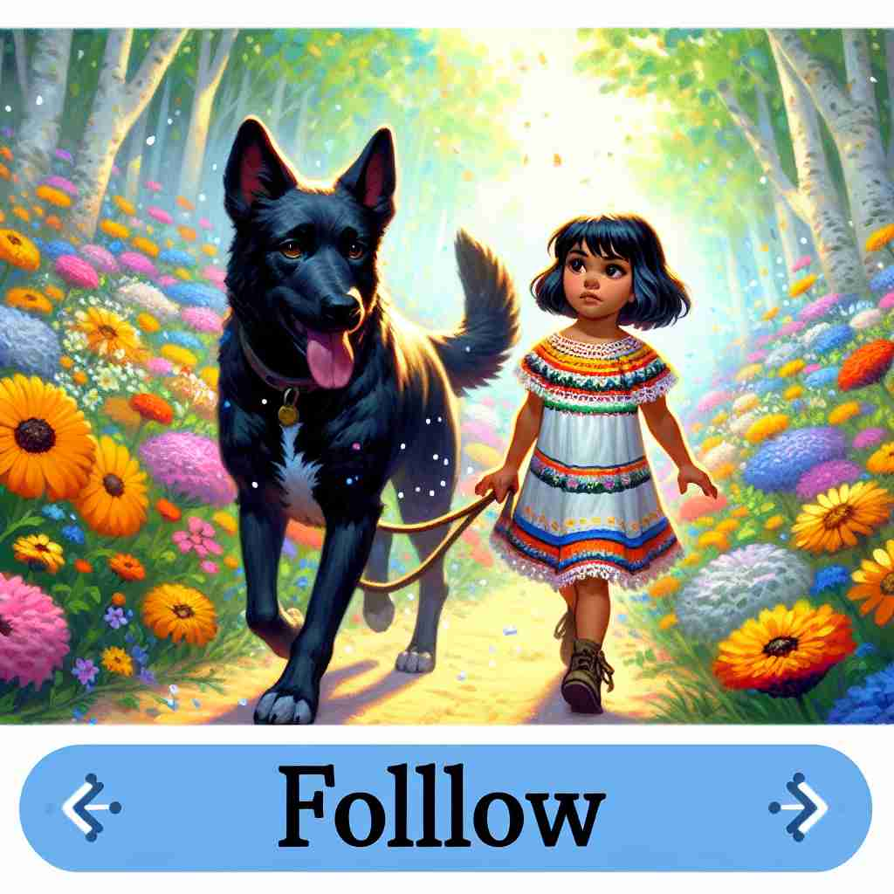

💬 The little duckling likes to follow the mother in the pond.
💬 In the city, people often follow the crowd to find their way.
💬 The children will follow the teacher to the playground.

💬 The girl loves to follow the dog in the garden.
🔈 ['fɒləʊ]
🗝️ v. to move behind someone or something in the same direction
🖼️ 在一个晴朗的公园里，小女孩牵着气球，兴奋地跑在前面，小狗紧紧跟在她身后，每次她转弯，小狗也迅速跟着转动方向，体现了‘follow’这个词紧紧尾随的含义。
🔍 想象你在"跟随"（follow）某人或某物。无论是实际的移动、时间顺序、规则遵守、思维理解还是兴趣追随，都可以用这个"跟随"的动作来联想。这个核心动作贯穿了"follow"的各种用法，帮助你更容易记住和理解它的多重含义。
💬 The little duckling likes to follow the mother in the pond.
💬 In the city, people often follow the crowd to find their way.
💬 The children will follow the teacher to the playground.
💬 The girl loves to follow the dog in the garden.
🌳 其词根为 'fol-'，源自古英语 'folgian'，意思是 '追随、跟随'，后面的 '-low' 是词的演变，无独特含义。整词表示 '跟随，追随' 的动作。
💡 记忆 'follow' 时，可以联想为 'foot'（脚）和 'path'（路），即用脚跟随着路径走的过程，帮助记住跟随的意思。
🗝️ v. to come after something in time or order
🖼️ 在一个序列实验室中，研究人员逐个测试化学反应。每次反应完成后，他在电脑上记录结果，接着继续下一个反应，这样的顺序展现了‘follow’作为时间或顺序上的接续。
💬 Monday follows Sunday in the week.
❓ 在时间或顺序上"跟随"
🗝️ v. to obey or act according to
🖼️ 在一个热闹的旅行团中，导游正指引大家进入历史博物馆。她说：‘请大家follow我的指令，不要走散。’此刻，游客们井然有序地照指引行动，展现了‘follow’之顺从含义。
💬 Please follow the instructions carefully.
❓ 在行为上"跟随"规则或指示
🗝️ v. to understand or pay attention to
🖼️ 在一个拥挤的大学教室里，教授正在讲解复杂的数学概念。一名学生全神贯注地记录笔记，微微点头表示理解，充分展现了‘follow’作为理解或专注的含义。
💬 I'm sorry, I don't follow your argument.
❓ 在思维上"跟随"某人的逻辑或解释
🗝️ v. to be interested in and keep informed about
🖼️ 在一个充满活力的新闻房间里，一位年轻记者正在紧张地注视大屏幕，随时更新国际新闻，展现出他对全球事件的持续关注和‘follow’之含义。
💬 She follows fashion trends closely.
❓ 在兴趣上"跟随"某事物的发展
🗝️ v. to result from
🖼️ 在一个科学研究讨论会上，科学家解释道：‘改变实验条件后，我们观察到新的现象follow。这种现象是由于特定反应结果带来的。’充分展示了‘follow’作为因果关系中的结果。
💬 Punishment will follow if you break the rules.
❓ 某事物"跟随"另一事物而发生
🗝️ v. to pursue as a profession or interest
🖼️ 在一个安静的图书馆中，一个年轻人专心致志地阅读有关天文学的书籍，心中充满对星辰的向往。他决定毕业后要follow天文学这份职业，展现出‘follow’作为追求职业或兴趣的含义。
💬 He decided to follow a career in medicine.
❓ 在职业或兴趣上"跟随"某个方向